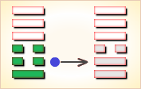
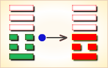
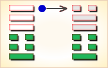

周易第25卦_无妄卦(天雷无妄)_乾上震下
如有疑问互相交流，微信：470283584
周易第25卦详解
无妄卦原文
无妄。元，亨，利，贞。其匪正有眚，不利有攸往。
象曰：天下雷行，物与无妄。先王以茂对时，育万物。
白话文解释
无妄卦：嘉美通泰，卜问得吉兆。行为不正当，则有灾殃，有所往则不利。
《象辞》说：本卦上卦为乾为天，下卦为震为雷，天宇之下，春雷滚动，万物萌发，孳生繁衍，这是无妄的卦象。先王观此卦象，从而奋勉努力，顺应时令，保育万物。
《断易天机》解
无妄卦乾上震下，为巽宫四世卦。无妄卦为天雷震响之象，表示事与愿违，可能会有小的灾祸，但先凶后吉。
北宋易学家邵雍解
不欺不妄，真实至诚；顺乎自然，福禄深宏。
得此卦者，顺其自然，守正道者，诸事皆宜。但行为不检者，必招灾祸。
台湾国学大儒傅佩荣解
时运：正当好运，诸事皆宜。
财运：货到财来，自然开心。
家宅：屋运甚旺；门当户对。
身体：保持运动，自可消化。
传统解卦
这个卦是异卦（下震上乾）相叠。乾为天为刚为健；震为雷为刚为动。动而健，刚阳盛，人心振奋，必有所得，但唯循纯正，不可妄行。无妄必有获，必可致福。
大象：雷动于天，阳气舒发，为真实无虚妄之意。
运势：凡事宜守正，若行为不检者，必招灾祸。
事业：贵自知之明，从个人实际出发，不抱非分之想，脚踏实地，勤奋努力，检点行为，防意外灾祸。不计较得失，诚心追求，待机而动，事业必成。
经商：切勿勉为其难，遵循市场规律，讲究商业道德，屏弃投机心理，勿贪暴利，经过辛勤努力，日积月累，必将成功。
求名：以良好的动机，刻苦努力，丢弃幻想，但问耕耘，不问收获，终将有所获。
婚恋：双方务以诚相待，绝不可抱以轻率的态度，亦不宜急于求成、顺其发展，水到渠成。
决策：精力充沛，富有上进心，可有作为。但务必勤勉努力，诚心诚恳，奋发向上，刻苦钻研。不可因小有成就而得意忘形。不必追求所得，而应追求实干。遵循规律办事，等待时机再行动。尤其应清除非份的念头。这样，可实现自己的理想。
台湾张铭仁解卦
无妄：表示不要有一些空幻的想法，或是你的想法可能有点虚妄不切实际，主小凶。建议凡事要务实、踏实一点。也表示目前所处的状况，是有一厢情愿的心态，或是有点「妄想症」的不切实际心理。
解释：无妄之灾。
特性：言词犀利，易生是非，愤世嫉俗，不流俗，求知欲强，重精神层面。
运势：无妄的道理是提醒要真实无虚，踏实。故若做事操守而能坚贞固执者吉。若不行正道，行为不检点者，必然有灾祸至也。切忌沉醉于利、欲之中，慎之。
家运：有不和之情况，因受外界诱惑而心乱，须谨慎，否则导致破运。
疾病：不宜意气用事，应尽力疗养为宜，属呼吸系统，头、足之疾病。
胎孕：或有惊，终无碍。
子女：注意与其父不和而离家出走。
周转：诚心有望，不诚免谈。
买卖：若不要过份苛求，有利。
等人：一定会来。但有不欢而散之象，宜以和为贵。
寻人：已走远，不易寻找，东北或西北之向。
失物：找不到，似已遗失。
外出：不存妄想则平安无事。为谋私利或邪念而行则大为不利，不宜行。
考试：笔试有利，口试不利。
诉讼：因女人或死亡之事起纷争，宜和解，否则招凶。
求事：毫无头绪，勿过于草率为宜。
改行：不宜勉强。
开业：开业者可行。
周易第25卦初九爻详解
初九爻辞
初九。无妄，往吉。
象曰：无妄之往，得志也。
白话文解释
初九：不要妄行非正，吉利。
《象辞》说：没有悖妄的行为，因为所有行动受到意志的控制。
北宋易学家邵雍解
吉：得此爻者，营谋得利。做官的会得到上司的赞许，百姓的爱戴。
台湾国学大儒傅佩荣解
时运：株守不宜，出而有为。
财运：行商有利，坐贾不宜。
家宅：迁居为宜；婿可入赘。
身体：出外就医。
初九变卦

初九爻动变得周易第12卦：天地否。这个卦是异卦（下坤上乾）相叠，其结构同泰卦相反，系阳气上升，阴气下降，天地不交，万物不通。它们彼此为“综卦”，表明泰极而否，否极泰来，互为因果。
周易第25卦六二爻详解
六二爻辞
六二。不耕获，不菑畲，则利有攸往。
象曰：不耕获，未富也。
白话文解释
六二：不耕种就想收获，不开荒地就想种熟地。这些妄谬的行径怎能有利?
《象辞》说：不耕种而想收获，这种空妄的念头不能带来财富。
北宋易学家邵雍解
吉：得此爻者，正当好运，不劳而获。富人进财多，商人出外获利。当官的会升官。读书人会取得佳绩。
台湾国学大儒傅佩荣解
时运：适得正运，意外之财。
财运：不谋而获，大利到手。
家宅：承继家产；招赘之亲。
身体：自然痊愈。
六二变卦

六二爻动变得周易第10卦：天泽履。这个卦是异卦（下兑上乾）相叠，乾为天，兑为泽，以天喻君，以泽喻民，原文：“履（踩）虎尾，不咥（咬）人”。因此，结果吉利。君上民下，各得其位。兑柔遇乾刚，所履危。履意为实践，卦义是脚踏实地的向前进取的意思。
周易第25卦六三爻详解
六三爻辞
六三。无妄之灾。或系之牛，行人之得，邑人之灾。
象曰：行人得牛，邑人灾也。
白话文解释
六三：意外的灾难。比喻说有人将牛系在不该系的地方，行人顺手牵牛获意外之得，邑人失牛受到意外之灾。
《象辞》说：行人意外得牛，邑人意外蒙灾。
北宋易学家邵雍解
凶：得此爻者，无妄之灾，破财损身。做官的不宜进取。
台湾国学大儒傅佩荣解
时运：尴尬之期，小心意外。
财运：防备别人，以免耗财。
家宅：外人侵占；远人结亲。
身体：外人传染，小心防治。
六三变卦

六三爻动变得周易第13卦：天火同人。这个卦是异卦（下离上乾）相叠，乾为天，为君；离为火，为臣民百姓，上天下火，火性上升，同于天，上下和同，同舟共济，人际关系和谐，天下大同。
周易第25卦九四爻详解
九四爻辞
九四。可贞，无咎。
象曰：可贞无咎，固有之也。
白话文解释
九四：称心的占问，没有灾难。
《象辞》说：具有贞正的品德，没有灾难，理应如此。
北宋易学家邵雍解
平：得此爻者，宜守旧，图谋有实，不致虚浮。做官的宜守职，勿妄动。
台湾国学大儒傅佩荣解
时运：气运平顺，妄动有咎。
财运：坚守旧业，可以获利。
家宅：保持祖业。
身体：安静调养，下月可愈。
九四变卦

九四爻动变得周易第42卦：风雷益。这个卦是异卦（下震上巽）相叠。巽为风；震为雷。风雷激荡，其势愈强，雷愈响，风雷相助互长，交相助益。此卦与损卦相反。它是损上以益下，后者是损下以益上。二卦阐述的是损益的原则。
周易第25卦九五爻详解
九五爻辞
九五。无妄之疾，勿药有喜。
象曰：无妄之药，不可试也。
白话文解释
九五：患意外之病，不要忙乱服药，自可痊愈。
《象辞》说：出人意外的药物，不可随便服用。
北宋易学家邵雍解
平：得此爻者，营谋有成，病得愈，或有生育之喜。做官的纵有祸难，也会不辩自明，不解自释。
台湾国学大儒傅佩荣解
时运：气运正好，不必介意。
财运：不忧物价，心平气和。
家宅：防备倾倒。
身体：不必担心。
九五变卦

九五爻动变得周易第21卦：火雷噬嗑。这个卦是异卦（下震上离）相叠。离为阴卦；震为阳卦。阴阳相交，咬碎硬物，喻恩威并施，宽严结合，刚柔相济。噬嗑为上下颚咬合，咀嚼。
周易第25卦上九爻详解
上九爻辞
上九。无妄，行有眚，无攸利。
象曰：无妄之行，穷之灾也。
白话文解释
上九：不要胡作妄行！将有灾殃，没有好处。
《象辞》说：谬妄的行为，是绝望无聊的表现。
北宋易学家邵雍解
平：得此爻者，好运已过，不可妄动，否则是非迭生，唯有变通可免祸。做官的妄动有被贬职之忧。
台湾国学大儒傅佩荣解
时运：好运已终，不可妄动。
财运：暂时静守，勿再投资。
家宅：慎勿迁移。
身体：年老颐养。
上九变卦

上九爻动变得周易第17卦：泽雷随。这个卦是异卦（下震上兑）相叠，震为雷，为动；兑为悦，动而悦就是“随”。随指相互顺从，己有随物，物能随己，彼此沟通。随必依时顺势，有原则和条件，以坚贞为前提。